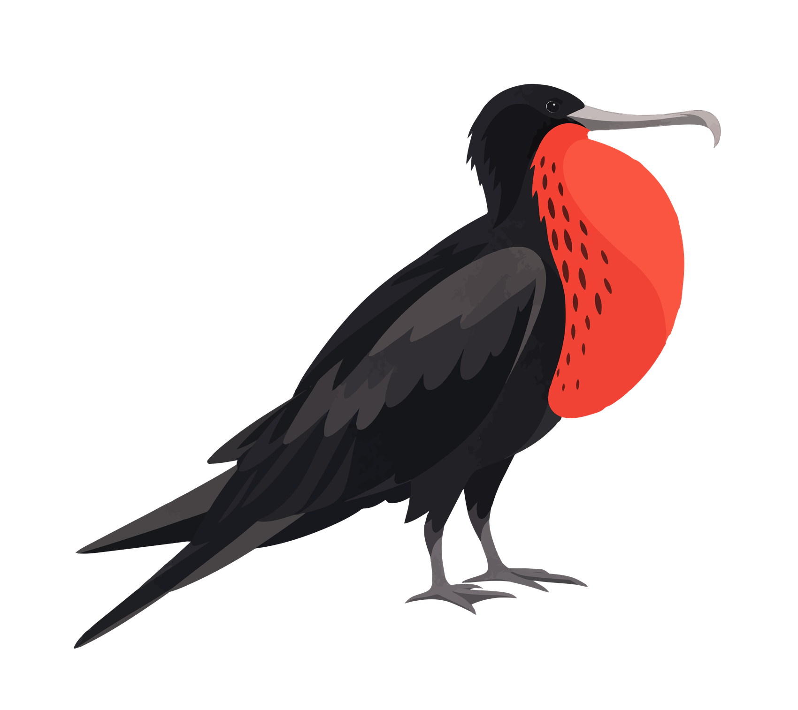
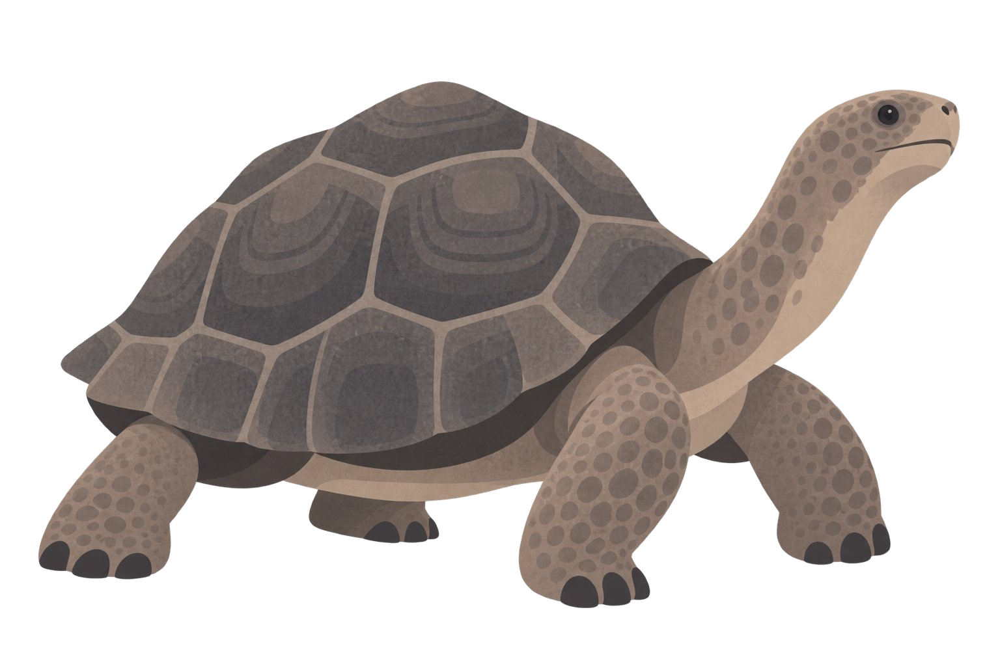

China National Geographic Voyages · Expedition Communication · 2026
Galapagos Islands Expedition
Four endemics of the equator
Before travellers meet Galapagos wildlife in person, they meet it on paper. These four illustrations introduce the species an equatorial voyage is most likely to encounter: drawn to be recognised again at a distance, on black lava, in the shallows and in the air.

01 · Galapagos Penguin
Spheniscus mendiculus. The only penguin that lives at the equator, most of them on Isabela and Fernandina, where the cold Cromwell Current wells up from the deep. At under 50 cm tall it is one of the smallest penguins in the world, and one of the rarest.

02 · Great Frigatebird
Fregata minor. The male inflates his scarlet throat pouch like a balloon to display beneath the nesting colonies. A frigatebird cannot land on the water, its feathers are not waterproof, so it feeds entirely on the wing, snatching flying fish and harrying boobies into giving up their catch.

03 · Blue-footed Booby
Sula nebouxii. The famous blue feet are an honest advertisement: the colour comes from pigments in fresh fish, so the bluest feet belong to the healthiest birds. Courtship is a slow, high-stepping dance in which each bird shows its feet to the other.

04 · Galapagos Giant Tortoise
Chelonoidis niger. The animal the islands are named after: galápago is an old Spanish word for a saddle, and for the tortoises whose shells recall one. Shell shape follows the island, domed where the ground is lush, saddle-shaped where a long neck is needed to reach high cactus. Individuals can live well beyond a century.
What to pack for the equator
Every traveller on the voyage receives this personal equipment checklist before departure: what the weather does at each stop from Amsterdam to Guayaquil, what the paperwork requires, and what to pack, layer by layer. The checklist was designed as one long illustrated sheet in Chinese. The full text is given in English alongside, so every item on the sheet can be read here.

Personal Equipment Checklist · Galapagos Islands Expedition · Full sheet
Good to know
- Reference temperatures (January). Amsterdam (transit): around 20°C, constant indoor temperature. Quito: cool, with a wide swing between day and night, averaging 8–22°C. The Galapagos Islands: warm and humid, averaging 16–28°C. Guayaquil: averaging 20–29°C.
- Dressing for the islands. Wear earth tones. Avoid yellow clothing and backpacks: the islands' wasps are sensitive to yellow and may attack.
Essentials
- Valid passport, valid for at least 6 months beyond the travel date.
- Ecuador e-visa: printed, with a copy saved on your phone.
- Printed copies of the flight itinerary, hotel bookings, insurance documents and a personal safety information card, carried with you, with digital copies on your phone.
- Cash: US dollars are widely accepted locally, carry a moderate amount.
- International credit cards such as Visa and Mastercard, stored separately in case of loss or theft.
- The expedition handbook, for the schedule and for team and individual arrangements.
Clothing
- Short-sleeved T-shirts, several
- Lightweight windproof and waterproof jacket, 1–2
- Fleece or jacket set, 1–2 (for cool mornings and evenings on board, rainy days and temperature drops)
- Lightweight outdoor or casual trousers, 3–4 pairs
- Shorts, 2–3 (essential, convenient for wet landings)
- Water shoes (essential for wet landings, flat soles recommended)
- Wide-brimmed hat covering the head, face and neck (mainly for sun protection)
- Comfortable, well-fitting walking shoes
- Swimwear (essential, worn while snorkelling)
- Snorkelling gear (the ship provides the wetsuit, mask, fins and a disposable snorkel tube. You may bring your own, and if you are short-sighted, bring a prescription mask or wear contact lenses)
- Pyjamas and slippers
- A change of personal clothing
Outdoor gear
- Travel backpack (a waterproof one is recommended, used at wet landings)
- Sunglasses
- Sunscreen (highest protection, against sunburn)
- Rain gear (a raincoat or a folding umbrella)
- Insect repellent
- Camera equipment (telephoto lens, underwater camera, tripod, memory cards)
- Dry bags or sealable plastic bags, to protect electronics from dust, moisture and rain
Recommended items
- Personal toiletries (toothpaste, toothbrush, towel, soap, shampoo, shower gel)
- A towel (a medium one, if needed)
- Disinfectant wipes or tissues (small packs, easy to carry)
- Seasickness medication (taken in advance, it reduces the discomfort of the swell)
- Everyday medicines (cold remedies, anti-inflammatories, stomach remedies, painkillers, or personal prescriptions)
- A power strip (if you carry several electronic devices)
- Trekking poles (also usable for walks on the islands)
- A personal insulated flask
- Neck pillow, earplugs and eye mask (for the flight)
- Quick energy snacks for activity days, such as chocolate and energy bars
- Local travel guides and books on history and culture
- International roaming on your phone
Provided for you
- Expedition handbook × 1
- Commemorative T-shirt × 1
- Plug adapter × 1
- Luggage strap set × 1
- China National Geographic Voyages luggage tag × 1
The ship identity above is the programme's own mark, shown as the commissioning organisation. The expedition is co-branded with the National Zoological Museum of China.